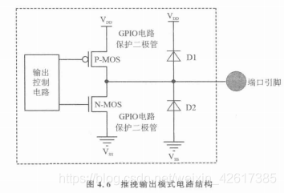
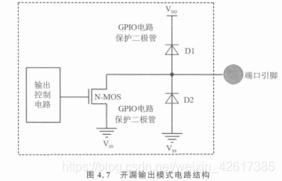
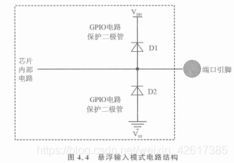
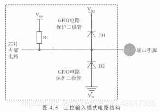
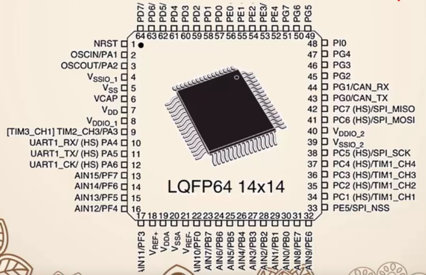
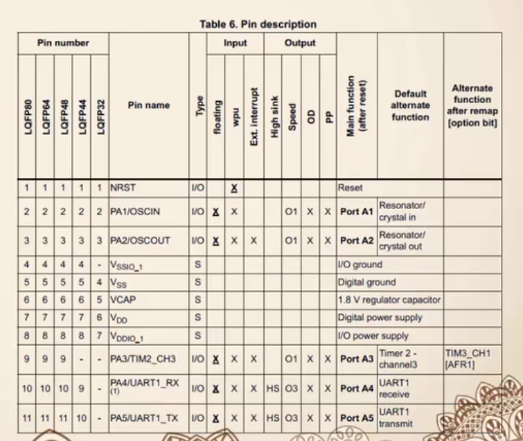
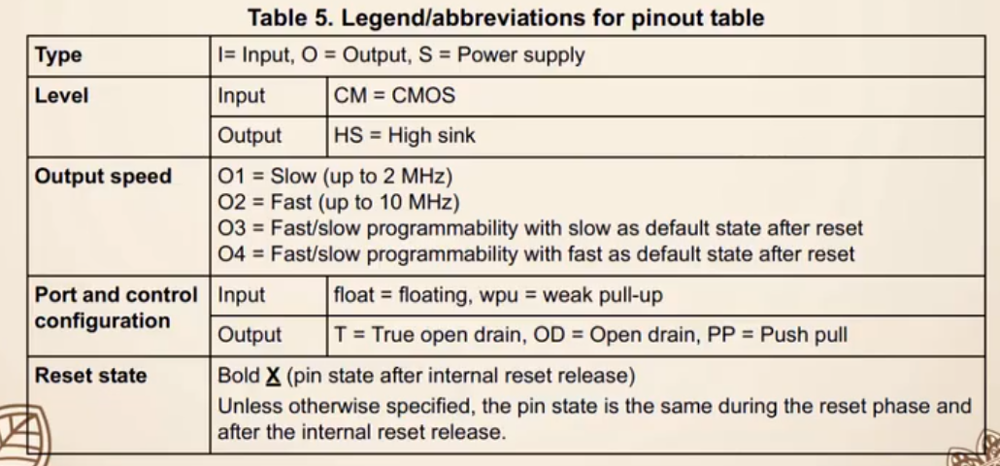

数据手册下载网站：：ALLDATASHEET,官网
液晶显示屏
- 液晶显示屏依靠驱动芯片来控制显示内容和操作，驱动芯片有HD44780等等。
- 液晶显示屏的种类有很多，如字符型液晶、图形型液晶和TFT液晶等
- 字符型液晶：字符型液晶显示屏仅能显示预定义的字符。
- 图形型液晶：图形型液晶显示屏能够显示自定义的图像、图形和文本。
- TFT液晶显示屏：一种彩色液晶显示屏，使用TFT技术来控制像素点。
HD44780
内置字符生成器，支持预定义的字符集，如字母、数字和特殊符号。
支持8位和4位并行接口，以便与微控制器连接。
可控制多行字符显示，如1行、2行或4行。
支持自定义字符，可以创建和显示特定于应用的字符。
具有简单的指令集，方便编程和控制。
时序图阅读

首先把RS置0/1（选择指令/数据模式)。然后将R/\(\overline{W}\)置1，为读模式。随后将E置1，使能。经过\(t_{DDR}\) 时间后，就可以从总线上取指令/数据了。
1 | 代码参考： |
1602字符型液晶模组
主要引脚：
VCC与GND：电源连接与接地。
VEE：对比度调整，通过一个可变电阻器连接，以调整显示对比度。
RS（Register Select）：寄存器选择，用于选择指令(0)或数据(1)模式。
R/\(\overline{W}\)（Read/Write）：读/写选择，决定当前操作是读取还是写入液晶模块。
EN（Enable）：使能信号，用于触发读/写操作。
DB0-DB7：数据线，用于传输8位数据或指令。并行DB0-DB7，串行DB4-DB7。
A（Anode）和K（Cathode）：背光LED的阳极和阴极。
12864图形型液晶
主要引脚：
- VCC、GND、EN、VEE、RST、A：电源连接、接地、使能引脚、对比度调整、复位、背光正/负极。
- DB0-DB7：数据线，用于传输8位数据或指令
- RS（Register Select）：命令/数据选择引脚，用于选择指令(0)或数据(1)模式。
- R/\(\overline{W}\)（Read/Write）：读/写选择，决定当前操作是读取还是写入液晶模块。
- PSB，串/并模式选择，为1，使用DB0-7。为0，使用RS、R/W、EN进行通信，此时RS为CS串行片选功能，R/W为SID串行输入输出功能，EN为CLK串行时钟功能。
- NC：空脚
- VO：内部电压输出
IIC通信
- IIC总线是两线式串行总线，用于连接多个芯片和传感器。由两条信号线完成通信，是半双工通信协议：SDA——数据线、SCL——时钟线
- IIC同时支持多个主机和多个从机，每个设备都有7位的唯一的地址。其中产生时钟信号的是主机，在此时，接收数据的都被认为是从机。
- 一般采用开漏结构和总线相连，因此SCL和SDA都需接上拉电阻。故总线空闲，SCL,SDA均为高电平，连接总线任一器件输出低电平，都会拉低总线电平。
IIC通信时序
- 空闲状态：SCL线与SDA线均处于高电平状态，等待起始信号
- 起始信号：由主机发送。SCL线为高电平期间，SDA线由高电平向低电平的变化表示起始信号。
- 终止信号：由主机发送。SCL线为高电平期间，SDA线由低电平向高电平的变化表示终止信号（释放SDA时，SDA会自动被拉高）
- 数据传输：SCL为低电平期间，才允许改变SDA电平，传输数据。SCK为高电平时，用以数据读取。故除开始结束信号外，SCL高电平时，不允许改变SDA。
- 数据传送格式：
以8位字节为单位传送，高位在前。每个字节发送完成后，接收方需发送一位ACK表示已经收到。也可在读操作时发送一位NACK信号，表示停止读取数据。
- ACK与NACK：SDA=1为NACK，SDA=0为ACK
- 通信过程中需要严格遵守IIC总线协议，包括起始信号、地址字节、数据字节、应答信号、停止信号等。
- 地址字节由7位设备地址，加一位R/\(\overline{W}\)构成。R/\(\overline{W}\)为1表示接下来是主机读信号，从机发送信号，为0表示接下来是主机发送，从机读取。（上面有一横，表示低电平有效）
写操作：先发送开始信号，在发送控制字节，地址字节，数据字节，其中每完发送一个字节，都需要一个应答信号ACK，结束信号。 如果地址超过一个字节，先发送地址高字节，IIC的发送，是高位在前。 控制字节：4bit控制码（如24C01C，是1010），3bit片选（选择哪个字节），1bit读写标志（1读，0写） 应答信号ACK：发送器在发送完1字节后，由接收器发送ACK信号，表示已经收到数据。 发送器释放SDA线(一般SDA会拉高)，接收器将SDA拉低，表示收到数据。注意，仅有开始，结束信号可以在SCL为高 时，改变SDA。
非应答信号NACK：在读操作时，接收方停止读取数据，则向发送方发送NACK
1 | /* |
EEPROM
EEPROM（Electrically Erasable Programmable Read Only Memory），电可擦除可编程只读存储器，是一种掉电之后数据不会丢失的存储芯片。 EEPROM里面用的芯片是24c0x系列芯片，它能够存储数据的大小为： 24C01：128字节（128×8位） 24C02：256字节（256×8位） 24C04：512字节（512×8位） 24C08：1K字节（1K×8位） 24C16：2K字节（2K×8位）
IIC通信相关问题
主机发送数据时，如果有多个从机，那么是不是所有从机都会接收到数据？
IIC的每个设备都有唯一的地址，所以发送开始信号后，会先发送从机的地址数据，故总线上所有的从机会对该地址进行比对，如果和自己的地址匹配，才接收下面的数据；
为什么总线上有任一主机发送时钟低电平，那么总线电平是低电平？
IIC一般采用开漏结构和总线相连，因此SCL和SDA都需接上拉电阻。
 如图，如果所有设备都输出高电平，那么总线电平为高电平，如果有一个设备发送低电平，那么，上拉电阻和发送低电平端口有电压差，电路导通，所以总线上的电平为低电平（高中物理中理想状态单独一根导线上的电压处处相等)
如图，如果所有设备都输出高电平，那么总线电平为高电平，如果有一个设备发送低电平，那么，上拉电阻和发送低电平端口有电压差，电路导通，所以总线上的电平为低电平（高中物理中理想状态单独一根导线上的电压处处相等)如果IIC总线上有多个主机发送数据，会发生数据冲突吗？
如果多个主机发送数据的时间不同，那么先发送数据的主机会占有主线，后发送的会检测到主线忙，于是停止发送。
如果多个主机发送数据的时间相同，会进行时钟同步和总线仲裁
时钟同步：
当有多个主机在同时发送时钟信号到总线上时，SCL被有最长低电平的器件占有控制权
如何实现：该主机发送时钟高电平后，会读SCL电平。由于IIC总线特点，总线上一个主机发送低电平时，整个总线的电平会拉低。所以当SCL为低电平时，该主机会进行等待，直到，SCL电平为高电平才进入下一步。
代码参考：
1
2
3
4
5
6
7
8
9
10IIC_SCL_HIGH();
delayus(2);//等待电平稳定
unsigned int num=2000;
while(num--){
if(IIC_SCL_Read()){//IIC_SCL_Read():读取SCL时钟信号
//这是在进行时钟同步，当有多个主机在同时发送时钟信号到总线上时，SCL被有最长低电平的器件占有控制权
//在这里，如果设置了SCL=HIGH，读取到的电平却没有改变为高电平，说明它没有占有总线，于是等待。
break;
}
}总线仲裁：各个主机发送SDA信息，发送低电平的占有总线，发送高电平的退出竞争，仲裁可以持续多位。
如果接收方没有来得及发送ACK信号会怎么样？
主机会发送开始信号重新传输，或发送结束信号，结束传输。
有没有可能主机发送得太快，从机还没有来得及读，就进入下一步？
可能，所以在芯片通过IIC与传感器通信时，传感器数据手册会有最大时钟频率设置，保证传感器来得及读取数据。所以在改变SCL,SDA电平时，会进行延时，一方面是等待电路稳定，另一方面是为了从设备来得及读取。
TM1637
1 | 你看一看我的理解有没有错误。 |
冗余计算：两个计算器进行计算，如果答案相同，计算可能正确，答案不同，必定至少有一个计算错误，可以用于校验计算的正确。
什么才是可计算的问题呢？有限步可以解决吗？是的。 模拟信号是连续的，数字信号是离散的。
74hc245是一种在单片机系统中常用的驱动器，三态输出八路收发器，它在电路中的作用是：增加io口的驱动能力，比如说51单片机的io口本身的驱动电流较小但所带的负载很大，这种时候就可以使用74hc245来增强io口的驱动能力
知识点：三极管、GPIO、74HC138译码器、定时器、中断、数码管、点阵LED、晶振、复位电路、独立按键、矩阵按键、74HC245驱动器、准双向IO口、步进电机、蜂鸣器、PWM、并行通信、串行通信，UART,I2C,SPI,差分信号，RS-485通信，Modbus协议
STM8的GPIO
- 确定是输入，还是输出
- 如果是输出，采取哪种模式，有两种输出模式：推挽、开漏 如果是输入，采取哪种模式，有两种输入模式：弱上拉，悬浮
- 确定输入输出模式后，如果是输出，确定以什么样是速率输出。 如果是输入，确定是否要有中断。所以在STM8中，有四种输入模式：悬浮、上拉、中断悬浮、中断上拉
推挽、开漏、上拉、悬浮详解
推挽 推挽输出的特点是提高负载驱动能力，提高开关速度。 推挽输出模式下，内部电路由两个管轮流导通输出高低电平，即在每一时刻只有一个管子处于导通状态。如图所示PMOS管导通，NMOS管关闭，输出高电平，NMOS管导通，PMOS管关闭，输出低电平。
扩展

开漏 开漏输出是MOS漏极处于开路状态，无法输出高电平，如果需要得到确定的高电平状态需要外接上拉电阻，适合于电流型的驱动，吸收电流能力强。 开漏模式中如果要输出高电平，只有外界上拉电阻，那么单片机内部就不需提供驱动电流，可以减少单片机自身功耗。
扩展

悬浮 悬浮输入模式下，电路的引脚电平状态不确定，它跟随外部信号的变化而变化，适用于模拟信号输入采样。
扩展
 很显然从电路图上可以看出，引脚到芯片内部电路上什么也没接，那么引脚的电平变化会直接反应到芯片内部电路中。
上拉 上拉的作用就是将引脚的不确定电平通过一个上拉电阻确定为高电平状态，减少外部电平的影响。 同理，下拉作用则是通过一个下拉电阻将引脚电平拉到低电平。一般来说上拉作用强弱与上拉电阻阻值和上拉电阻端电源电压有关，电压一定时，阻值越小上拉作用越强。同理下拉时阻值越小下拉作用越强。
扩展
 显然，从电路图上可以看出，当端口断开时，整条回路断路，电阻相当于断路，此时端口的电平就是VDD电平。当端口没有断开是输入到内部电路的电流也有来自 VDD-->R1-->芯片内部电路 的一份，那么来自外部环境的影响就被削弱了。
集成电路是采用一定工艺，将一个电路中所需要的晶体管、电阻、电容、电感等元件和布线都互连在一起，并制作成小块的半导体晶片或介质基片上，并封装好的。在电路中用“IC”表示。
芯片引脚
数据手册的芯片引脚和现实的芯片引脚如何对应
可以看出，现实的芯片有一个小的圆形印记，将芯片的字体摆正，圆形印记在左下方，所以芯片的引脚是以左下方的第一个引脚为1号，逆时针编号到第n号(比如64)
 ##### 如何阅读数据手册的引脚描述表
Pin number是引脚编号，为“-” 表示无此引脚，LQFP80表示采取了该类封装的芯片，Pin name是引脚名字。 Type为I/O表示其为输入/出引脚，为S表示电源电极 floating(悬浮输入) wpu(弱上拉输入) Exit.interrput(外部中断输入) High sink(高吸收电流) Speed(输出速率) OD(开漏输出) PP(推挽输出) Main function(alter reser) 复位后的主功能 Default alternate function 默认的复位后功能 Alternate function after remap[option bit] 选项位
 
GPIO常用寄存器
每个GPI0端口都分配有五个寄存器:输出数据寄存器 Px_ODR、输入数据寄存器 Px_IDR、数据方向寄存器 Px_DDR、控制寄存器1 Px_CR1、控制寄存器2 Px_CR2 （x表示端口组，取A~I)
DDR为0表示输入，为1表示输出 输入模式中：CR1为0表示悬浮，为1表示上拉 输出模式中：CR1为0表示开漏，为1表示推挽 输入模式中：CR2为0表是不开启中断，为1表示开启中断 输出模式中：CR2为0表示不采取快速模式，为1表示采取快速模式
在进行读操作是我们通过读取寄存器IDR的值获取引脚的电平状态，通过改变寄存器ODR的值进行输出。

从这里我们也可以清楚，如果要使GPIO端口，必定要设置DDR，CR寄存器的值，以配置好其输入输出模式，一般会自定义一个函数GPIO_init(),在其中配置好各个寄存器的值。
示例代码
1 | 配置实例1:现需配置PB组端口高4位为悬浮输入模式低4位为弱上拉输入模式，读取端口状态赋值给变量“x”,读取单一端口PB2状态赋值给变量“y”: |
三极管 在电路中作用：作为开关使用、放大电流 有三个极：基极B、集电极C、发射极E
- NPN型三极管
- PNP型三极管
mos管 有三个极
P沟道
N沟道
数码管
在数码管中为减少引脚，一般会多个led灯共阳/阴。在电路图中，会用A表示阳极，K表示阴极，各个灯与编号的对应关系如下图所示。

在使用多个数码管时，要引入位、段的概念，位表示的是哪个数码管，段表示的是数码管中各个led灯的电平情况。多位数码管一般会采取动态显示法。公共端上电，后送入位码，然后送段码，决定哪个数码管亮哪些灯，利用人眼的视觉残留，一定时间内依次亮不同的灯，呈现出所有灯亮的效果。 当使用多个数码管时，为减少引脚，可以使用驱动、电子开关、串转并、专用驱动芯片等来节省IO口。 利用74HC595芯片多个驱动数码管
可以发现，有上划线的表示低电平有效。
SPI协议
相关例程
点亮一个led灯
1 | RCLK |
流水灯
1 |
|
中断点亮LED
1 | //------------------------------header------------------------------------------ |
STM8定义外部中断的例子（ChatGPT写的）
1 |
|
时钟周期与机器周期
时钟周期：
1
CPU时间的最小基本单位，通常是CPU时钟信号从上升沿到下降沿再到下一次上升沿所需要的时间。不同的CPU架构和处理器型号，时钟周期的长度可能不同，例如，一个12MHz的晶振，CPU时钟信号的一个完整周期为1/12MHz ≈ 83.33纳秒。
机器周期：
1
一个机器周期包括多个时钟周期，通常是CPU执行一个完整的机器指令所需要的时间。
通常来说，CPU的时钟频率越高，机器周期包含的时钟周期数量就越少，因为在相同的时间内，CPU可以执行更多的操作和指令。
智能机制作：嵌入式系统（MKL25Z128VLK4 MCU)
学堂在线的课程 智能机制作：嵌入式系统 的2.2从晶体管到CPU没看懂，建议在学习数字电路后，重新回顾。
CPU的基本结构和运行机制
ALU：运算逻辑单元 Reg：寄存器单元 CU：控制单元 对于CPU的各个单元的存在意义，我们理一下： 首先，计算机是用于计算的，那么它必须要有一个用于逻辑计算的单元：ALU 其次，我们应该要意识，运行的结果需要有存放的地方，那就是：寄存器 最后，计算机需要有一个部件使得计算机知晓应该采取何样的顺序，执行何种运算，这就是：控制器 IO设备用于计算机与外界交互，毕竟我们需要的不是一个自顾自的做自己的事，无法使用的石头。
UART串口通信
串口通信
串口通信（Serial communication）是一种通信方式，通过串行（逐位）传输数据。它是计算机和其他设备之间传输数据的常用方法。串口通信有多种类型，如 UART（通用异步收发器）、SPI（串行外设接口）、I2C（内部集成电路总线）等。
UART串口通信：
定义
UART（通用异步收发器）是一种异步串行通信协议，使用两个数据线进行通信：TX（发送）和 RX（接收）。UART 通信具有以下特点：
- 异步：通信双方不需要共享时钟信号，而是各自有一个独立的时钟源。通信的开始和结束由起始位和停止位来标识。
- 数据帧结构：每个数据帧通常包括一个起始位、5到9个数据位、一个可选的奇偶校验位和一个或两个停止位。
- 波特率：通信速率，即每秒传输的位数。通信双方需要设置相同的波特率以进行有效通信。
- UART 通信只需两个设备之间的两个数据线，适用于点对点通信。
- 可扩展：通过添加额外的硬件（例如 RS-232、RS-485、RS-422 等），UART 通信可以用于长距离传输或多设备通信。
UART 通信过程
- 发送设备将要发送的字节（8位数据）从并行到串行转换，并将起始位、数据位、奇偶校验位（可选）和停止位组合成一个数据帧。
- 数据帧通过 TX 线发出，连接对面的RX引脚。
- 接收设备的 RX 线接收数据帧，连接对面的TX引脚。
- 接收设备通过内部时钟，从起始位开始，同步地对接收到的数据位进行采样。
- 将接收到的数据位转换回字节，并检查奇偶校验位（如果存在）以确保数据传输的正确性。
- 如果数据有效，接收设备会处理这些数据。如果检测到错误，接收设备可以请求重发。
UART发送接收
1 | 普通UART模式下串行数据的发送接收帧结构： |